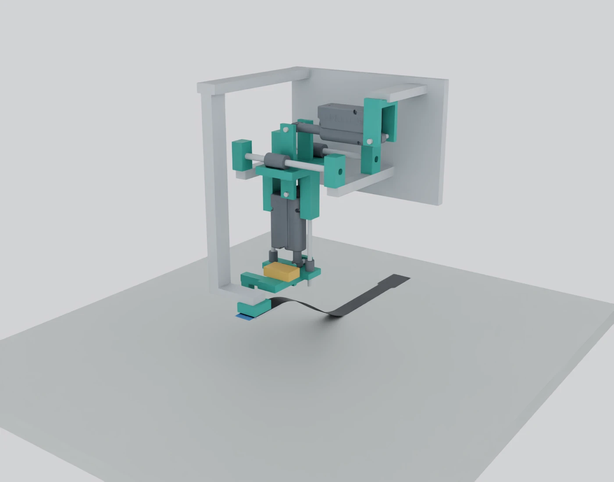
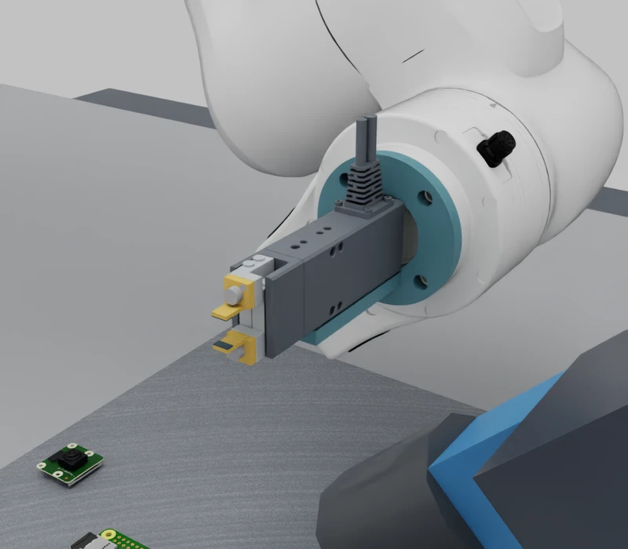
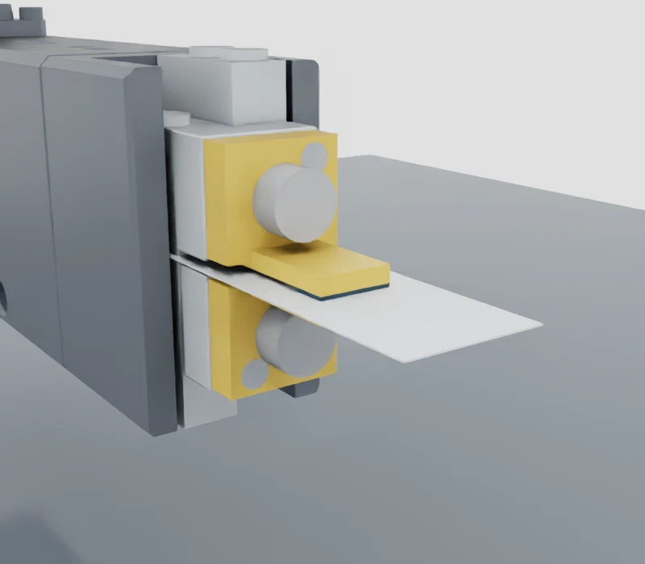
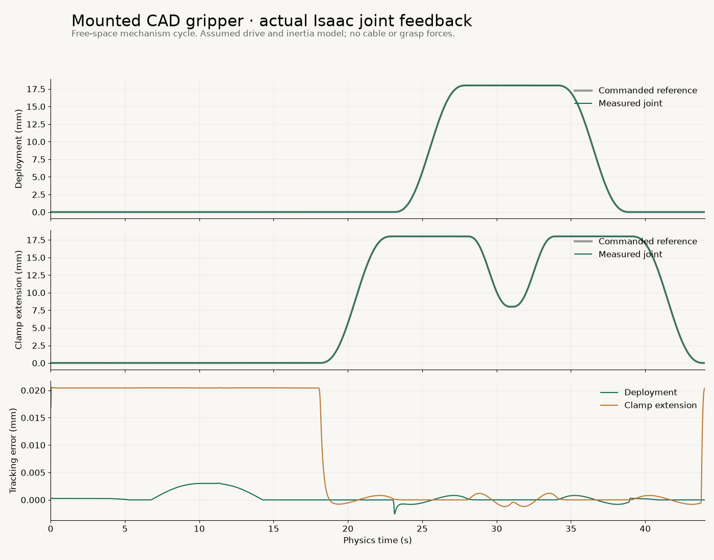
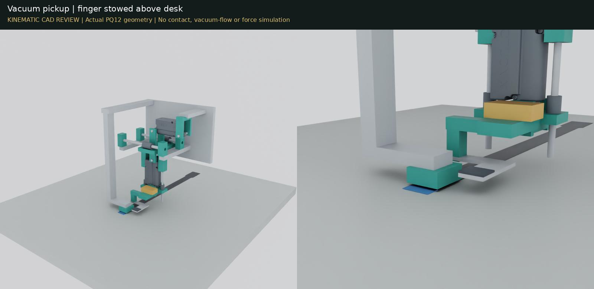

Current compact candidate: PGEA mounted on the FR3 — scale and clearance review. The larger PQ12 design below remains the earlier comparison.
Mechanical design / mounted motion
Vacuum first.
Then a supported grip.
Commercial actuators, custom printed parts, and a lower finger that moves underneath the ribbon after pickup.
We kept the two independent motions from the simulated tool and built this first CAD layout around actual Actuonix PQ12 geometry.

The new mounted recording uses Isaac rigid-body physics. The earlier standalone animation farther down prescribes the ribbon shape. Neither demonstration establishes vacuum retention, cable contact forces or grip stability; the force-sensing cartridge is still a space reservation.
Current candidate / mounted layout
The compact tool, on the robot.
This separate candidate scene replaces the old mechanism with the PGEA, custom fingers and a provisional side bracket. The robot is parked at the existing workcell pose. The fingers project 107 mm from the flange, so their scale can now be judged against the wrist, PCB and camera.

Six seconds, 72 frames. Stationary robot, prescribed jaw motion and zero physics steps. This is a layout review, separate from the earlier PQ12 physical joint tests below.
Bracket fit
A 63 mm flange ring and short side arm meet the gripper’s broad-face mounting holes. Fixed-body intersection is zero; eight sampled jaw openings also clear the bracket.
Parked clearance
Conservative bounding-box separation is 13.9 mm to the macro-camera envelope and 86.6 mm to the board. These numbers apply only to this stationary pose, not an insertion path.
Still provisional
Fasteners, locating fit, stiffness and cable routing remain unqualified. There is no vacuum nozzle yet, and the compact assembly has no rigid-body or contact model.
Adapter concept STEP · Geometry report · Render trace · Sources, reproduction and remaining work
Compact candidate / geometry review
Two small fingers on a commercial gripper.
The PGEA handles the jaw motion. Our proposed fingers bolt onto its front faces and reach 12 mm forward. Each has a 6 × 3 mm contact pad; a 0.5 mm inward offset lets the pads close across the cable thickness.
Eight seconds, 96 frames. Actual supplier geometry and custom finger CAD rendered in Isaac. The cable coupon stays fixed; this is prescribed motion with zero physics steps, not a demonstrated grasp.
Mounting
Each finger has a 3 mm mounting plate, one nominal M3 × 5 screw and one locating-pin concept. Nominal screw engagement is 2 mm into the drawing’s 3 mm threaded depth. Pin retention and tolerances are unresolved.
Checks passed
No opposing-jaw or housing overlap at 23 sampled openings. Separate coupons at 11.5 and 16 mm width, and 0.14 and 0.3 mm thickness, touch both pads without solid penetration. Those thicknesses remain simulation assumptions.
Still to establish
Finger stiffness, edge radii, pad material, retention and slip. The robot adapter, vacuum nozzle, PCB clearance and macro-camera visibility are not covered by this standalone study.

The imported CAD has an 11.4 mm jaw gap, whereas the drawing specifies 1–11 mm. We rebase each jaw by 0.2 mm without scaling the geometry. The supplier O-S geometry has the 89 mm side cable exit; the catalogue’s suffix mapping still needs confirmation before ordering.
New milestone / actual Isaac physics
The tool now moves with the FR3.
The CAD assembly is attached to the robot through a provisional flange adapter. Deployment and clamping are separate physical sliding joints. Position and velocity feedback govern the test sequence; object poses and simulator cable state are not controller inputs.
44.009 seconds of physics, 44,009 steps and 1,100 recorded frames. Empty tool; assumed actuator dynamics; no cable or PCB in this commissioning scene.
Mounted mechanism
Settle, move the shoulder 0.1 rad (5.7°) and return. Lower the parked jaw, deploy 18 mm, close, open, withdraw and raise.
Measured response
Peak tool speed 6.75 mm/s. Largest transient tool tracking error 0.021 mm. Every phase passes separate position and velocity settling checks.
What remains
The 470 g payload is an estimate. Actuator backlash, thermal duty, vacuum sealing, cable contact and pinch-force sensing still need models and tests.
Watch each of the nine recorded stages

Read exactly what this physics model includes
Three rigid tool bodies join the seven-axis FR3 articulation. Both prismatic joints have 20 mm travel. Their surrogate drives use 8,000 N/m stiffness, 80 N·s/m damping, a 5 N force cap and an 8 mm/s speed cap. These are commissioning assumptions, not an identified PQ12 motor model or a safe pinch-force specification.
Per-part convex hulls approximate collision geometry. Joints filter collisions between directly connected bodies. The monitor reported no contact pairs in the free-space cycle. This does not establish full workcell clearance or internal running fits.
The adapter is an aluminium envelope with no qualified bolt pattern or structural analysis. The orange sensor block remains a visual reservation. This accelerated mechanism test does not qualify the PQ12's 20% duty cycle.
Stop during an arm move
Cancel halfway through a planned 0.1 rad shoulder move. Maximum measured post-cancel excursion: 0.00004080 rad. Read the report.
Stop while the finger deploys
Cancel midway through the 18 mm deployment. Maximum measured tool excursion after cancellation: 0.0066 mm. Read the report.
These are individual simulated hold tests with the same controller revision as the cycle above. They do not establish hardware protective-stop performance or task-level recovery.
Twenty-second mechanism review
See how the finger gets underneath.
The lower finger begins sideways and above the suction tips, so it can approach a ribbon lying flat on the desk. Only after lifting does it lower, slide underneath and close.
240 rendered frames at 12 fps. Zero physics time advanced. Travel is illustrative, not a measured actuator speed profile.
Pick up and lift
Vacuum support touches the cable. The finger stays raised and parked to the side during the illustrated 35 mm lift.
Deploy and close
Lower the parked finger, move it 18 mm underneath, then retract the clamp actuator 10 mm toward the ribbon.
Open and stow
Open before withdrawing sideways. Raise the finger again before lowering the tool back toward the desk.

What is in the assembly
Two axes. A fixed vacuum support.
What we buy
Two PQ12-30-6-P actuators are the present design candidates. Their body and shaft geometry comes from the manufacturer's STEP assembly.
Vacuum cups, metal guides and bearings are represented by size envelopes. Exact guides, drive electronics, valves and the vacuum supply still need selection.
PQ12 datasheet (PDF) →What we make
Printed clevises, a deployment carriage, vacuum shoe and finger carrier adapt the motion components to the cable.
The long frame and thin lower finger are represented as metal. We are not relying on an untested printed sliding surface or a thin printed edge to hold alignment.
Inspect the custom parts →What the CAD check establishes
The desk clearance changed the design.
An early layout put the lower finger below the suction plane while parked. It would reach the desk before pickup. The current revision adds an above-plane stow position and moves the finger's vertical support beside the ribbon tail.
No desk intrusion or overlap was found among the checked solids in those poses. This check excludes the supplier actuator shells, same-motion-group pairs, cable, sensor reservation and unmodeled fasteners. It is not a continuous collision proof.
Read the bounded geometry check · Read the component manifest
Why actuator position alone cannot set pinch force
The PQ12 specification lists 0.25 mm backlash and ±0.1 mm repeatability. Its P version supplies potentiometer feedback, not a force sensor. We need a designed compliant load path and measured force feedback before claiming gentle clamping. The orange block is only reserved space for that work.
The published maximum duty cycle is 20%. Continuous repeated training motions would need a suitable duty schedule or different actuators. Neither low-force performance nor service life has been demonstrated here.
Open the design yourself
CAD files and the build recipe.
All downloads are for fit review. They are not released manufacturing files. Screw retention, running fits, print orientation, structural loads and the force cartridge still need engineering.
The whole task / simulation first
Seven skills. Where we actually stand.
We have tested useful parts of the pipeline. The new tool does not yet pick up and insert the Pi cable end to end. Real hardware tests remain deferred while we build the simulation proof of concept.
| Skill | Evidence so far | Still needed |
|---|---|---|
| 01 · See the entrance | Pi scenes, macro-camera study, entrance labels, OpenCV + DINOv3, held-out synthetic review and ROS freshness checks. | New-tool visibility, independent glare/occlusion tests, calibrated uncertainty and metric cable-to-opening estimates. |
| 02 · Pick up gently | Commercial-actuator CAD, sampled geometry audit and mounted empty-tool physics. | Compliant cable, vacuum/pressure model, force-sensing load path, slip/damage evaluation and direct-vs-fixture comparison. |
| 03 · Inspect and orient | Inspection concept and labelled cable-end features. | Stable held-cable simulation, inspection poses, end-frame estimation and second-view/regrasp behavior. |
| 04 · Align clear of contact | Offline image-space edge fitting, dry-run motion contracts and actual joint-drive commissioning. | Measured visual Jacobian, new-tool clearance corridor and closed-loop camera-guided approach. |
| 05 · Contact and insert | Historical generic contact experiments; these do not qualify the current Pi task. | Qualified connector/cable contact, tactile feedback, bounded insertion, collision/buckle/slip detection and stop/retract. |
| 06 · Verify and latch | Connector geometry and preliminary slider segmentation. | Dynamic latch, seating evidence, separate latch action and false-success rejection. |
| 07 · Recover and repeat | Observation-contract fault tests and measured joint cancellation. | Task-level fault injection, bounded retries/regrasps, safe stops and independent repeated-trial statistics. |
Earlier PQ12 layout: remaining work
Finish the force-sensing and compliance cartridge, select actual guides and retention hardware, qualify the provisional FR3 adapter, then check the whole tool against the camera and PCB.
This larger layout does not inherit the old tool's clearance results. Dynamic pickup, slip and insertion testing come after those changes are represented in Isaac.